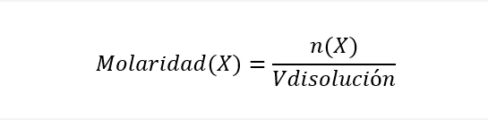
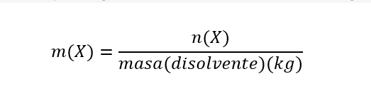

¿Qué es una solución química?
Se denomina solución o disolución química a una mezcla homogénea de dos o más sustancias químicas puras. Una disolución puede ocurrir a nivel molecular o iónico y no constituye una reacción química.
De esta manera, la disolución resultante de la mezcla de dos componentes tendrá una única fase reconocible (sólida, líquida o gaseosa) a pesar inclusive de que sus componentes por separado tuvieran fases distintas. Por ejemplo, al disolver azúcar en agua.
Toda solución química presenta, como mínimo, dos componentes: un soluto (el que es disuelto en el otro) y un solvente o disolvente (que disuelve al soluto). En el caso del azúcar disuelto en agua, el azúcar es el soluto y el agua es el disolvente.
La formación de soluciones y mezcla s de sustancias es fundamental para el desarrollo de nuevos materiales y para el entendimiento de las fuerzas químicas que permiten a la materia combinarse. Esto resulta de particular interés para los campos de la química, la biología y la geoquímica, entre otros.
En general, toda solución química se caracteriza por:
Soluto y solvente no pueden separarse por métodos físicos como filtración o tamizado, ya que sus partículas han constituido nuevas interacciones químicas.
Poseen un soluto y un solvente (como mínimo) en alguna proporción detectable.
A simple vista no pueden distinguirse sus elementos constitutivos.
Únicamente pueden separarse soluto y solvente mediante métodos como la destilación, la cristalización o la cromatografía.
Tipos de solución química
Las soluciones químicas pueden clasificarse de acuerdo a dos criterios.
La proporción entre el soluto y el disolvente:
Diluidas. Cuando la cantidad de soluto respecto al solvente es muy pequeña. Por ejemplo: 1 gramo de azúcar en 100 gramos de agua.
Concentradas. Cuando la cantidad de soluto respecto al solvente es grande. Por ejemplo: 25 gramos de azúcar en 100 gramos de agua.
Saturadas. Cuando el solvente no acepta ya más soluto a una determinada temperatura. Por ejemplo: 36 gramos de azúcar en 100 gramos de agua a 20 °C.
Sobresaturadas. Como la saturación tiene que ver con la temperatura, si incrementamos la temperatura, se puede forzar al solvente a tomar más soluto del que ordinariamente puede, obteniendo una solución sobresaturada (saturada en exceso, digamos). Así, sometida a un calentamiento, la solución tomará mucho más soluto del que ordinariamente podría.
El estado de agregación de los componentes:
Sólidas:
Sólido en sólido. Tanto el soluto como el disolvente se encuentran en estado sólido. Por ejemplo: las aleaciones como el latón (cobre y zinc).
Gas en sólido. El soluto es un gas y el disolvente es un sólido. Por ejemplo: hidrógeno en paladio, polvo volcánico, entre otros.
Líquido en sólido. El soluto es un líquido y el disolvente es un sólido. Por ejemplo: las amalgamas (mercurio y plata)
Líquidas:
Sólido en líquido. Por lo general, se disuelven pequeñas cantidades de sólido (soluto) en un líquido (disolvente). Por ejemplo: azúcar disuelto en agua.
Gas en líquido. Se disuelve un gas (soluto) en un líquido (disolvente). Por ejemplo: el oxígeno disuelto en el agua de mar que es responsable de la vida acuática en el planeta.
Líquido en líquido. Tanto el soluto como el disolvente son líquidos. Por ejemplo: las amalgamas (mercurio y plata)
Gaseosas:
Gas en gas. Tanto el soluto como el disolvente son gases. En muchas ocasiones estas disoluciones se asumen como mezclas debido a las débiles interacciones entre las partículas de los gases. Por ejemplo: oxígeno en aire.
Gas en sólido. El soluto es un gas y el disolvente es un sólido. Por ejemplo: polvo disuelto en aire.
Líquido en gas. El soluto es un líquido y el disolvente es un gas. Por ejemplo: vapor de agua en el aire.
Concentración de una solución química
La concentración es una magnitud que describe la proporción de soluto respecto al solvente en una disolución. Esta magnitud se expresa en dos tipos distintos de unidades:
Unidades físicas. Aquellas que se expresan en relación al peso y al volumen de la solución, en forma porcentual (se multiplican por 100). Por ejemplo:
%Peso/peso. Se expresa en gramos de soluto sobre gramos de solución.
%Volumen/volumen. Se expresa en centímetros cúbicos (cc) de soluto sobre cc de solución.
%Peso/volumen. Combina las dos anteriores: gramos de soluto sobre cc de solución.
Unidades químicas. Aquellas que se expresan en sistemas de unidades químicas. Por ejemplo:
Molaridad (M). Se expresa en número de moles de soluto sobre un litro de solución o un kilogramo de solución. Se calcula de la siguiente manera:

Donde n(X) es la cantidad de moles del componente X y Vdisolución es el volumen de la disolución. La molaridad se expresa en moles/Ldisolución.
Fracción molar (Xi). Se expresa en términos de moles de un componente (solvente o soluto) en relación con los moles totales de la solución, de la siguiente manera:
Xsolución = moles de soluto / (moles de soluto + moles solvente)
Xsolvente = moles de solvente / (moles de soluto + moles solvente)
Siempre contemplando que:
Xsolvente + Xsolución = 1
La fracción molar es adimensional, es decir, no se expresa en unidades de medición.
Molalidad (m). Es la proporción entre el número de moles de cualquier soluto disuelto por kilogramos de disolvente. Se calcula de la siguiente manera:

Donde m(X) es la molalidad de X, n(X) es el número de moles de X y masa(disolvente) es la masa de disolvente expresada en kg. Es importante aclarar que la molaridad se expresa por kg (1000g) de disolvente. Se expresa en unidades de mol/kg.